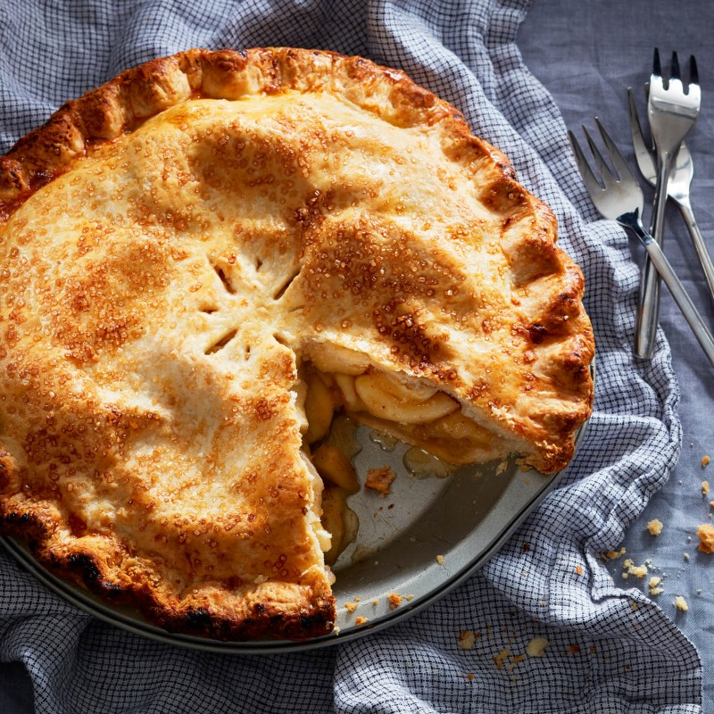

| 
Original page
|
Ingredients
- 2 1/2 cups all-purpose flour
- 2 tbsp granulated sugar
- 1 tsp salt
- 1/2 cup cold lard, cubed
- 1/2 cup cold unsalted butter, cubed
- 6 to 8 tbsp ice water
Filling
- 6 cups Golden Delicious apples, peeled and cut into scant 1/2-in. slices (about 6 apples)
- 4 cups Granny Smith apples, peeled and cut into scant 1/2-in. slices (about 3 apples)
- 1 tbsp lemon juice
- 2 tbsp butter
- 2/3 cup granulated sugar
- 1/4 cup cornstarch
- 2 tsp lemon zest
- 1/4 tsp cinnamon
- 1/4 tsp salt
- 1/4 tsp freshly grated nutmeg
- Egg wash
- 1 egg, mixed with 1 tsp water
- 1 tsp coarse sugar (optional)
Instructions
- DOUGH: Whirl flour, 2 tbsp sugar and 1 tsp salt in a food processor until combined. Add lard and pulse 12 times until fine. Add 1/2 cup butter and pulse 7 or 8 times until pea-size. While pulsing, add ice water through the feed tube until dough just comes together. Divide dough in half and quickly press into balls. Wrap in plastic wrap, then flatten into discs. Refrigerate until firm, 1 hr.
- POSITION rack in lowest level of oven. Place a baking sheet on rack. Preheat to 425F.
- ROLL 1 dough portion into a 12-in. circle on a lightly floured surface. Press onto a 9-in. pie plate, then refrigerate. Roll remaining dough portion into a 13-in. circle. Place on a large plate and refrigerate.
- FILLING: Toss apples with lemon juice in a large bowl. Melt 2 tbsp butter in an extra-large frying pan over medium. Add apples and cook, stirring, until liquid evaporates, 7 to 9 min. Transfer to a baking sheet and set on a rack, turning occasionally, until cooled, 25 min. Stir 2/3 cup sugar, cornstarch, lemon zest, cinnamon, 1/4 tsp salt and nutmeg in a bowl. Sprinkle over apples and toss to combine. Pour apples and any juices into chilled pie shell, spreading evenly.
- PLACE remaining dough over apples, pressing edges of dough together. Trim edges with scissors, if needed, leaving 1/2-in. overhang. Fold top edge under bottom edge, then crimp together using index finger and thumb. Cut 3 to 5 steam vents on top. Brush with egg wash without touching the edges. Sprinkle with coarse sugar.
- PLACE pie on hot baking sheet and bake for 20 min. Reduce heat to 375F, then rotate pie. Continue baking until crust is deep golden brown and a paring knife can be easily inserted into apples, 20 to 25 min. Cover with foil if browning too quickly. Cool on rack for at least 2 hr.
|